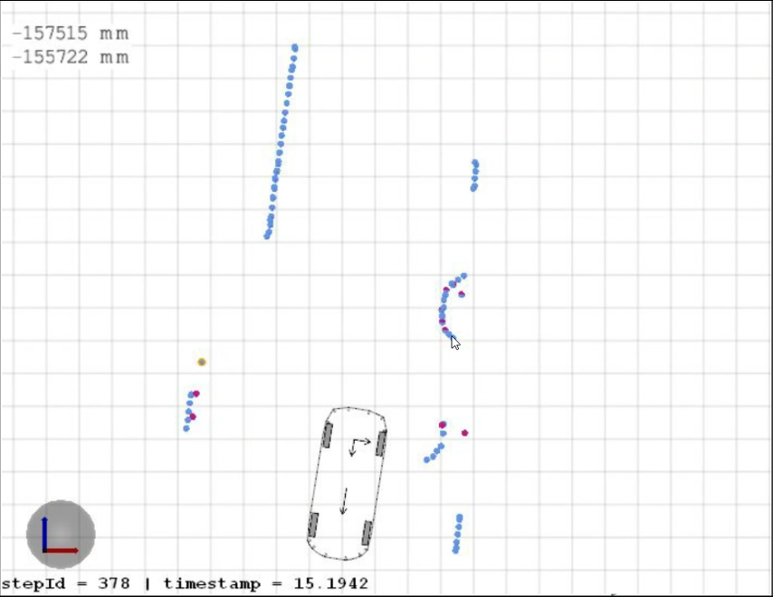

APA ContoursFusion Plan & State
Framework
Figure 1 APA Contour architecture
The link of the green arrow is the development and simulation of PI2303, but there is no solid car test verification.
The orange arrow is the processing link of the APA CONTOURS FUSION.
State
APA Contour Progress - PJ-W3-PER - Docupedia (bosch.com)
530 nodes -providing CONTOURS, which provides USS point clouds
Based on 4.1, a CONTOUR DATA, which provides a USS point cloud, can be opened to downstream users to realize the Data link.The Current State is as follows:
need:
The first edition requirements and interfaces are basically sorted out
Develop ：
The alignment and projection of USS point clouds and SEMSEG images:
Understand and use w3_trans_helper libraries and related APIs Introduction & tag log - wave 3 development - Docupedia (bosch.com)
Prepare 11127C to look at the camera calibration file (in the short term, the AOS Parameter mechanism needs to be introduced in the long run, and SWA has been submitted)
The packet and screening of USS point clouds:
Dianyun uses DBSCAN clustering
For each class, whether there is OBSTACLE within the range of the surrounding 5X5
According to whether the statistical value of the group level is more than half, decide whether to retain the point of the group
Contour's package: The demand for downstream is divided into two levels, one is the demand of the NODE level, and the other is the needs of Object.
Node level:
At present, only 100 points per frame (fixed -length) of downstream, only the first 100 points of the USS first take the first 100 points of the USS
The variance matrix is not available for the time being
Object level:
Object ID, currently cannot provide ID
Confident, take the Node average in the group
Height class, vote value in the group
Object class, height class is high as OBSTACLE, low is set to Curbstone
integrated
Upgrade AOS 3.3 Solving compilation problems (on-going)
test
data:
Rosbag Contains: XODOM & Valeo UPER Point Cloud 5/18, it is serious [CNWVIII-42256] Validation:: Chery 430 SW USS data record - tracker08 (bosch.com)
Rosbag Contains: XODOM & Valeo Uper Point Cloud & ipm Semseg 5/25, DELAY
environment:
Can't compile the X86 version of ROOT → Can't set up DOL offline running ENVIRONMENT
tool ：
USS point cloud visual Tool Ready, lack of data verification
620 nodes -the full Voxel Fusion link,
The current state is as follows:
Develop
VIPER preprocessor code -not start
voxel core code Develop -60%
CONTOUR post -processing code -NOT START
integrated —— not start
test
data
rosbag contains: xodom & valeo uper point cloud & ipm semseg & fisheye freespace 5/31 ——not ready
environment
DOL Environment -NOT Ready
tool
VIPER input interface visualization of Tool -NOT Ready
CONTOUR output interface visualization tool -NOT Ready
Plan
stage 1: UPER + Viper Semseg
DD: 5/30
tasks:
verify & test the rosbag data for Valeo Uper. 5/18
rosbag contains: xodom & valeo uper point cloud 5/18
rosbag contains: xodom & valeo uper point cloud & ipm semseg 5/25
rosbag contains: xodom & valeo uper point cloud & ipm semseg & fisheye freespace 5/31
Code implement: cluster Valeo uss cloud, generate uss contours. 5/25
Code implement: verify & refine uss contours by Viper IPM semantic information. 5/27
debug & test. 5/30
Comment
UPER signal is from Valeo UPER box
Valeo output: height type, no semantic info
- 
stage 2: UPER + Viper_Semseg + NRCS freespace polyline
DD: 6/20 (1MM, depends on GUO Hongming task schedule in PI2306 )
tasks:
NRCS free-space polyline rosbag verification
Code implement: NRCS free-space polylines post processing. 6/08
Code implement: Contours extraction from free-space polylines post. 6/15
Code implement: USS obstacle + NRCS free-space multi-modal fusion. (depends on debugging progress) 6/17
debug & test. 6/20

stage 3: UPER + Viper_Semseg + NRCS freespace polyline + Depth image (stixel)
Input
UPER: uss + height type (low, high, traversable, NA)
VIPER: free-space polyline + stixel-based height
Tasks:
stixel extraction from each depth image
obstacle shape extraction: up, down, left, right
volumetric fused contour: uss + free-space contour
fused height info for each contour
Comments:
Depth image is useful to detect overhanging obstacle
The obstacle height is from both Uper & depth
Viper IPM semantic info refines fused_contour.
Depends on:
accuracy of depth image


(a) the free-space (b) foreground membership

(c) membership cost image (d) height segmentation
Appendix: